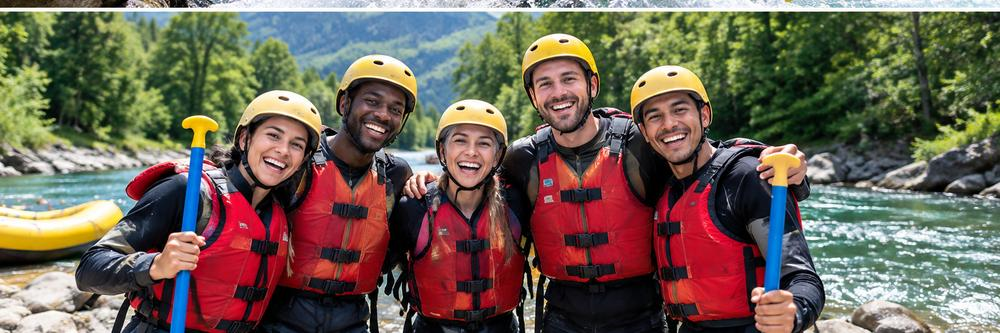

At Rapid River Adventures, our mission is to provide safe, thrilling, and unforgettable white water rafting experiences for families, thrill-seekers, and nature lovers alike. We are deeply committed to protecting our pristine river ecosystems while sharing the absolute joy and excitement of outdoor adventure.